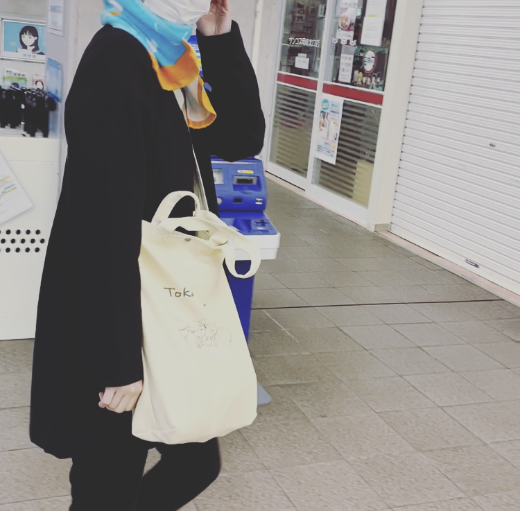

WORKS
これまでの授業で制作したものをまとめました.
ABOUT
わたしについて.

武庫川女子大学 情報メディア学科 ３年生
田中 紀香
ゼミでは、ウェブ技術＆インタラクション研究室に所属.
大学1年次に「ITパスポート」を取得し、
現在は「基本情報技術者試験」合格に向けて勉強を進めています.
アルバイトでは、小学生向けのプログラミング教室で講師をしています.
文理融合の情報系学科に所属する大学生です.
これまでの授業で制作したものをまとめました.
わたしについて.
武庫川女子大学 情報メディア学科 ３年生
ゼミでは、ウェブ技術＆インタラクション研究室に所属.
大学1年次に「ITパスポート」を取得し、
現在は「基本情報技術者試験」合格に向けて勉強を進めています.
アルバイトでは、小学生向けのプログラミング教室で講師をしています.